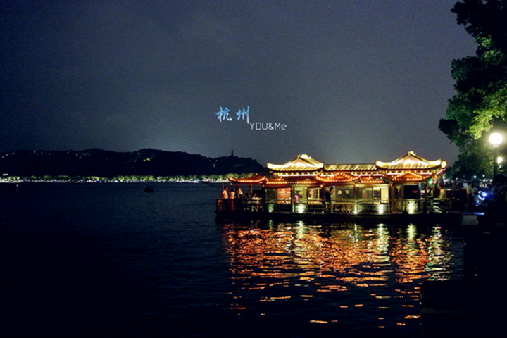
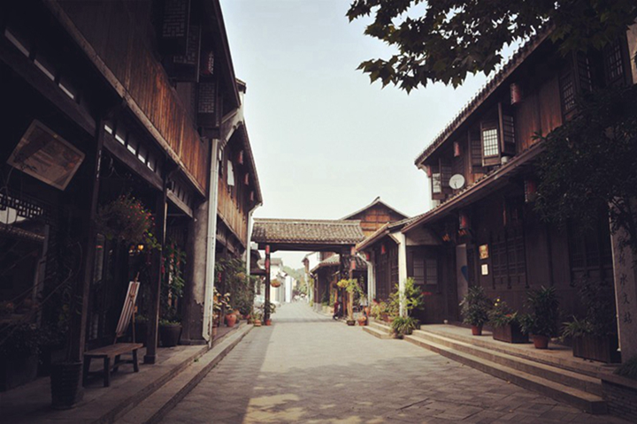

-
千风万景中遇见你 - 首页
- 精选
- 邂逅
-

- 消息

目的地>中国>杭州
Hang Zhou


杭州

杭州天气
晴 21℃~22℃
162人来过这里
27篇旅游日志
27篇旅游日志
景点介绍
杭州，曾经因为一句“上有天堂，下有苏杭”而成为人们印象中天堂的化身，也曾因为“梁祝”、“白蛇传”而披上凄美浪漫的头纱。那都是几百年前的事情啦。但庆幸的是，西子湖的一潭碧水、龙井灵隐的茶园茂林和杭州人内敛隽秀的个性，让杭州至今仍保持着大家闺秀的风范。
如果，把杭州比喻成一个人的话，那一定是一个有着明亮双眸、读过一些诗书、柔声细语、总是微笑偶尔落泪，且待字闺中的大小姐。 她有得天独厚却不张扬的美貌，浓妆淡抹总相宜的西湖、清幽的九溪十八涧、闹中取静的西溪湿地、闲云野鹤般存在的西泠印社，让几乎每一个来过的人都称赞不绝；她也有耍小性子的时候，连续40天不放晴的梅雨天、越来越炎热难当的桑拿夏日、湿冷透骨的冬天，让生活在这儿的人，忍不住产生逃离的念头。可一旦离开，就又会无限想念。 真似一个不着痕迹就能引人牵肠挂肚的小妮子！
杭州风景美丽，人间天堂名不虚传。整个城市的绿化很好，空气很清新。最著名的景点就是西湖，西溪湿地也很舒服。杭州的生活节奏不快，租借一辆自行车在市区骑行也很不错。
景点美照


- 2016-2017© 遇见网® yujian.com All rights reserved.Version v1.00
遇见网为旅行爱好者提供记录自己旅途见闻并展示的个人空间。